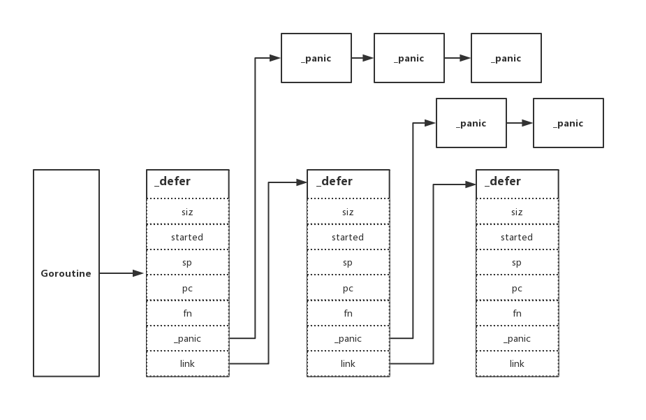

6.2 defer
在上一章節 《深入理解 Go panic and recover》 中，我們發現了 defer 與其關聯性極大，還是覺得非常有必要深入一下。希望透過本章節大家可以對 defer 關鍵字有一個深刻的理解，那麼我們開始吧。你先等等，請排好隊，我們這兒採取後進先出 LIFO 的出站方式...
特性
我們簡單的過一下 defer 關鍵字的基礎使用，讓大家先有一個基礎的認知
一、延遲呼叫
func main() {
defer log.Println("EDDYCJY.")
log.Println("end.")
}
輸出結果：
$ go run main.go
2019/05/19 21:15:02 end.
2019/05/19 21:15:02 EDDYCJY.
二、後進先出
func main() {
for i := 0; i < 6; i++ {
defer log.Println("EDDYCJY" + strconv.Itoa(i) + ".")
}
log.Println("end.")
}
輸出結果：
$ go run main.go
2019/05/19 21:19:17 end.
2019/05/19 21:19:17 EDDYCJY5.
2019/05/19 21:19:17 EDDYCJY4.
2019/05/19 21:19:17 EDDYCJY3.
2019/05/19 21:19:17 EDDYCJY2.
2019/05/19 21:19:17 EDDYCJY1.
2019/05/19 21:19:17 EDDYCJY0.
三、執行時間點
func main() {
func() {
defer log.Println("defer.EDDYCJY.")
}()
log.Println("main.EDDYCJY.")
}
輸出結果：
$ go run main.go
2019/05/22 23:30:27 defer.EDDYCJY.
2019/05/22 23:30:27 main.EDDYCJY.
四、異常處理
func main() {
defer func() {
if e := recover(); e != nil {
log.Println("EDDYCJY.")
}
}()
panic("end.")
}
輸出結果：
$ go run main.go
2019/05/20 22:22:57 EDDYCJY.
原始碼剖析
$ go tool compile -S main.go
"".main STEXT size=163 args=0x0 locals=0x40
...
0x0059 00089 (main.go:6) MOVQ AX, 16(SP)
0x005e 00094 (main.go:6) MOVQ $1, 24(SP)
0x0067 00103 (main.go:6) MOVQ $1, 32(SP)
0x0070 00112 (main.go:6) CALL runtime.deferproc(SB)
0x0075 00117 (main.go:6) TESTL AX, AX
0x0077 00119 (main.go:6) JNE 137
0x0079 00121 (main.go:7) XCHGL AX, AX
0x007a 00122 (main.go:7) CALL runtime.deferreturn(SB)
0x007f 00127 (main.go:7) MOVQ 56(SP), BP
0x0084 00132 (main.go:7) ADDQ $64, SP
0x0088 00136 (main.go:7) RET
0x0089 00137 (main.go:6) XCHGL AX, AX
0x008a 00138 (main.go:6) CALL runtime.deferreturn(SB)
0x008f 00143 (main.go:6) MOVQ 56(SP), BP
0x0094 00148 (main.go:6) ADDQ $64, SP
0x0098 00152 (main.go:6) RET
...
首先我們需要找到它，找到它實際對應什麼執行程式碼。透過彙編程式碼，可得知涉及如下方法：
- runtime.deferproc
- runtime.deferreturn
很顯然是執行時的方法，是對的人。我們繼續往下走看看都分別承擔了什麼行為
資料結構
在開始前我們需要先介紹一下 defer 的基礎單元 _defer 結構體，如下：
type _defer struct {
siz int32
started bool
sp uintptr // sp at time of defer
pc uintptr
fn *funcval
_panic *_panic // panic that is running defer
link *_defer
}
...
type funcval struct {
fn uintptr
// variable-size, fn-specific data here
}
- siz：所有傳入引數的總大小
- started：該
defer是否已經執行過 - sp：函式棧指標暫存器，一般指向當前函式棧的棧頂
- pc：程式計數器，有時稱為指令指標(IP)，執行緒利用它來跟蹤下一個要執行的指令。在大多數處理器中，PC指向的是下一條指令，而不是當前指令
- fn：指向傳入的函式地址和引數
- _panic：指向
_panic連結串列 - link：指向
_defer連結串列

deferproc
func deferproc(siz int32, fn *funcval) {
...
sp := getcallersp()
argp := uintptr(unsafe.Pointer(&fn)) + unsafe.Sizeof(fn)
callerpc := getcallerpc()
d := newdefer(siz)
...
d.fn = fn
d.pc = callerpc
d.sp = sp
switch siz {
case 0:
// Do nothing.
case sys.PtrSize:
*(*uintptr)(deferArgs(d)) = *(*uintptr)(unsafe.Pointer(argp))
default:
memmove(deferArgs(d), unsafe.Pointer(argp), uintptr(siz))
}
return0()
}
- 取得呼叫
defer函式的函式棧指標、傳入函式的引數具體地址以及PC （程式計數器），也就是下一個要執行的指令。這些相當於是預備引數，便於後續的流轉控制 - 建立一個新的
defer最小單元_defer，填入先前準備的引數 - 呼叫
memmove將傳入的引數儲存到新_defer（當前使用）中去，便於後續的使用 - 最後呼叫
return0進行返回，這個函式非常重要。能夠避免在deferproc中又因為返回return，而誘發deferreturn方法的呼叫。其根本原因是一個停止panic的延遲方法會使deferproc返回 1，但在機制中如果deferproc返回不等於 0，將會總是檢查返回值並跳轉到函式的末尾。而return0返回的就是 0，因此可以防止重複呼叫
小結
在這個函式中會為新的 _defer 設定一些基礎屬性，並將呼叫函式的引數集傳入。最後透過特殊的返回方法結束函式呼叫。另外這一塊與先前 《深入理解 Go panic and recover》 的處理邏輯有一定關聯性，其實就是 gp.sched.ret 返回 0 還是 1 會分流至不同處理方式
newdefer
func newdefer(siz int32) *_defer {
var d *_defer
sc := deferclass(uintptr(siz))
gp := getg()
if sc < uintptr(len(p{}.deferpool)) {
pp := gp.m.p.ptr()
if len(pp.deferpool[sc]) == 0 && sched.deferpool[sc] != nil {
...
lock(&sched.deferlock)
d := sched.deferpool[sc]
unlock(&sched.deferlock)
}
...
}
if d == nil {
systemstack(func() {
total := roundupsize(totaldefersize(uintptr(siz)))
d = (*_defer)(mallocgc(total, deferType, true))
})
...
}
d.siz = siz
d.link = gp._defer
gp._defer = d
return d
}
- 從池中取得可以使用的
_defer，則複用作為新的基礎單元 - 若在池中沒有取得到可用的，則呼叫
mallocgc重新申請一個新的 - 設定
defer的基礎屬性，最後修改當前Goroutine的_defer指向
透過這個方法我們可以注意到兩點，如下：
defer與Goroutine(g)有直接關係，所以討論defer時基本離不開g的關聯- 新的
defer總是會在現有的連結串列中的最前面，也就是defer的特性後進先出
小結
這個函式主要承擔了取得新的 _defer 的作用，它有可能是從 deferpool 中取得的，也有可能是重新申請的
deferreturn
func deferreturn(arg0 uintptr) {
gp := getg()
d := gp._defer
if d == nil {
return
}
sp := getcallersp()
if d.sp != sp {
return
}
switch d.siz {
case 0:
// Do nothing.
case sys.PtrSize:
*(*uintptr)(unsafe.Pointer(&arg0)) = *(*uintptr)(deferArgs(d))
default:
memmove(unsafe.Pointer(&arg0), deferArgs(d), uintptr(d.siz))
}
fn := d.fn
d.fn = nil
gp._defer = d.link
freedefer(d)
jmpdefer(fn, uintptr(unsafe.Pointer(&arg0)))
}
如果在一個方法中呼叫過 defer 關鍵字，那麼編譯器將會在結尾處插入 deferreturn 方法的呼叫。而該方法中主要做了如下事項：
- 清空當前節點
_defer被呼叫的函式呼叫資訊 - 釋放當前節點的
_defer的儲存資訊並放回池中（便於複用） - 跳轉到呼叫
defer關鍵字的呼叫函式處
在這段程式碼中，跳轉方法 jmpdefer 格外重要。因為它顯式的控制了流轉，程式碼如下：
// asm_amd64.s
TEXT runtime·jmpdefer(SB), NOSPLIT, $0-16
MOVQ fv+0(FP), DX // fn
MOVQ argp+8(FP), BX // caller sp
LEAQ -8(BX), SP // caller sp after CALL
MOVQ -8(SP), BP // restore BP as if deferreturn returned (harmless if framepointers not in use)
SUBQ $5, (SP) // return to CALL again
MOVQ 0(DX), BX
JMP BX // but first run the deferred function
透過原始碼的分析，我們發現它做了兩個很 “奇怪” 又很重要的事，如下：
- MOVQ -8(SP), BP：
-8(BX)這個位置儲存的是deferreturn執行完畢後的地址 - SUBQ $5, (SP)：
SP的地址減 5 ，其減掉的長度就恰好是runtime.deferreturn的長度
你可能會問，為什麼是 5？好吧。翻了半天最後看了一下彙編程式碼...嗯，相減的確是 5 沒毛病，如下：
0x007a 00122 (main.go:7) CALL runtime.deferreturn(SB)
0x007f 00127 (main.go:7) MOVQ 56(SP), BP
我們整理一下思緒，照上述邏輯的話，那 deferreturn 就是一個 “遞迴” 了哦。每次都會重新回到 deferreturn 函式，那它在什麼時候才會結束呢，如下：
func deferreturn(arg0 uintptr) {
gp := getg()
d := gp._defer
if d == nil {
return
}
...
}
也就是會不斷地進入 deferreturn 函式，判斷連結串列中是否還存著 _defer。若已經不存在了，則返回，結束掉它。簡單來講，就是處理完全部 defer 才允許你真的離開它。果真如此嗎？我們再看看上面的彙編程式碼，如下：
。..
0x0070 00112 (main.go:6) CALL runtime.deferproc(SB)
0x0075 00117 (main.go:6) TESTL AX, AX
0x0077 00119 (main.go:6) JNE 137
0x0079 00121 (main.go:7) XCHGL AX, AX
0x007a 00122 (main.go:7) CALL runtime.deferreturn(SB)
0x007f 00127 (main.go:7) MOVQ 56(SP), BP
0x0084 00132 (main.go:7) ADDQ $64, SP
0x0088 00136 (main.go:7) RET
0x0089 00137 (main.go:6) XCHGL AX, AX
0x008a 00138 (main.go:6) CALL runtime.deferreturn(SB)
...
的確如上述流程所分析一致，驗證完畢
小結
這個函式主要承擔了清空已使用的 defer 和跳轉到呼叫 defer 關鍵字的函式處，非常重要
總結
我們有提到 defer 關鍵字涉及兩個核心的函式，分別是 deferproc 和 deferreturn 函式。而 deferreturn 函式比較特殊，是當應用函式呼叫 defer 關鍵字時，編譯器會在其結尾處插入 deferreturn 的呼叫，它們倆一般都是成對出現的
但是當一個 Goroutine 上存在著多次 defer 行為（也就是多個 _defer）時，編譯器會進行利用一些小技巧， 重新回到 deferreturn 函式去消耗 _defer 連結串列，直到一個不剩才允許真正的結束
而新增的基礎單元 _defer，有可能是被複用的，也有可能是全新申請的。它最後都會被追加到 _defer 連結串列的表頭，從而設定了後進先出的呼叫特性